There are 39 POIs location in this method. The dimensions of all POIs are independent from the distance.
There is no way to understand the distance by looking at the points. This method can be download by
CampusAR.
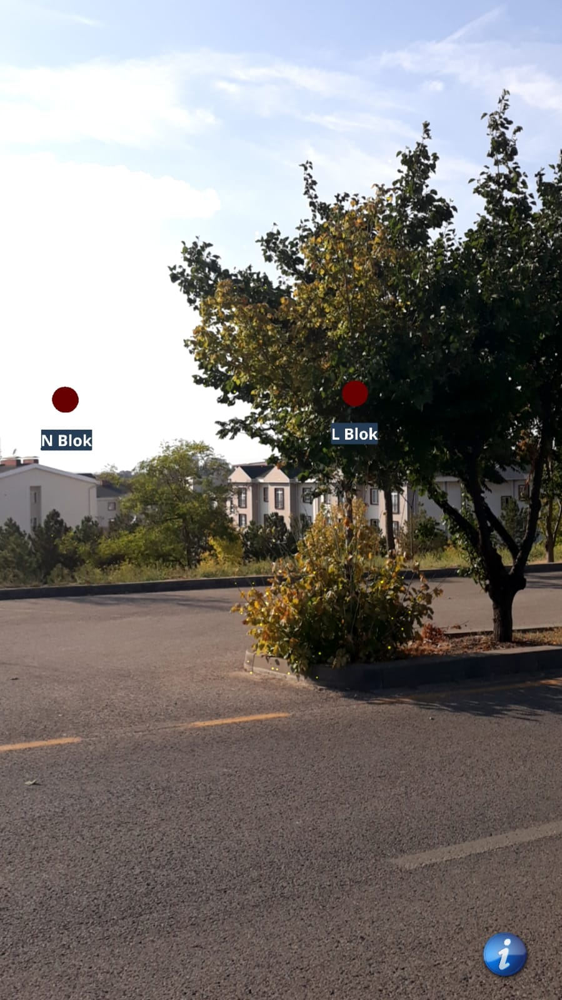
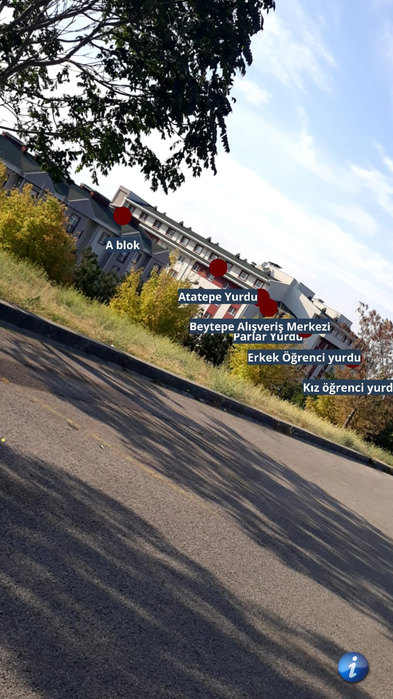
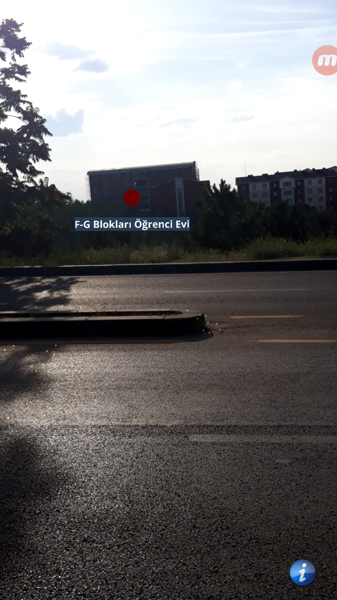
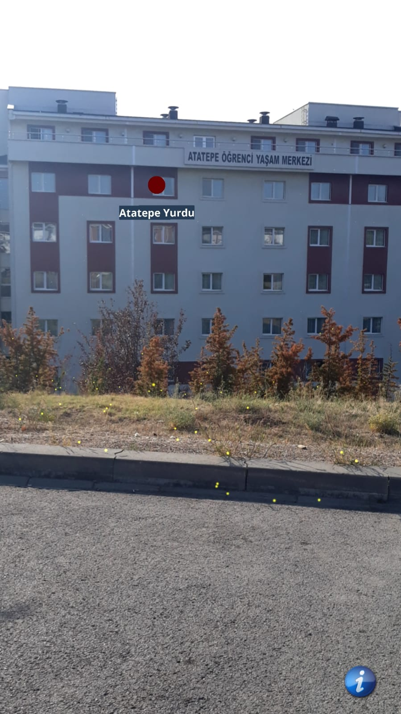
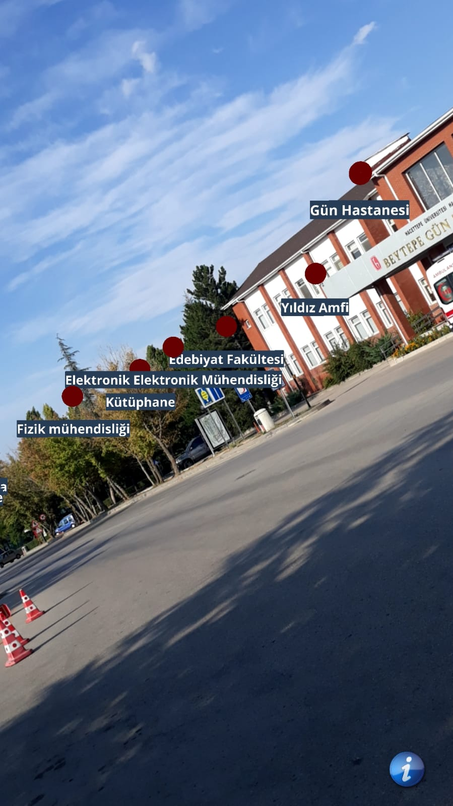
CampusAR Discrete Colors
There are 39 POIs location in this method. Discrete colors were determined according to distance of points.
How far away the POIs are from the user can be understood by looking at their colors.
This method can be download by
CampusAR Discrete Colors.
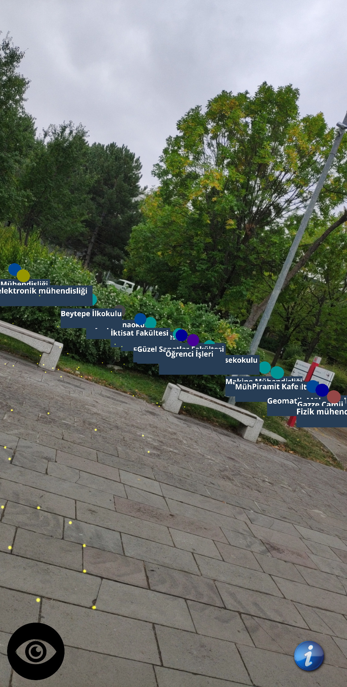
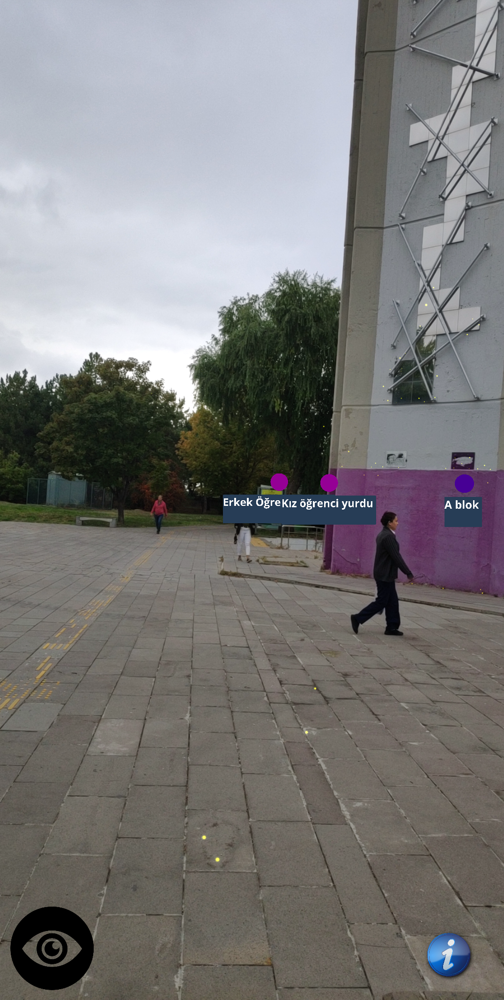
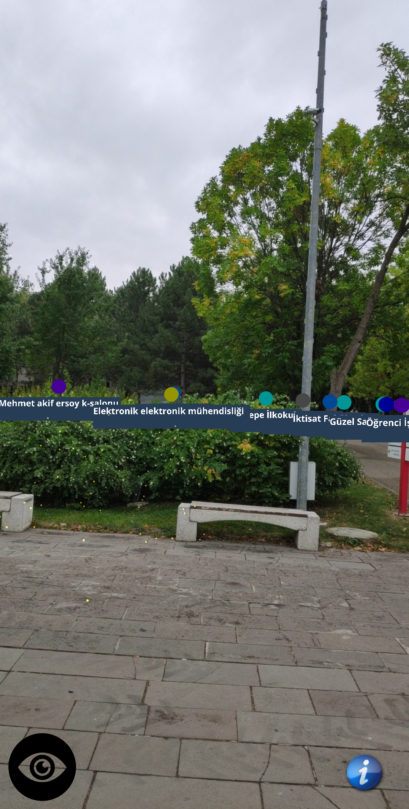
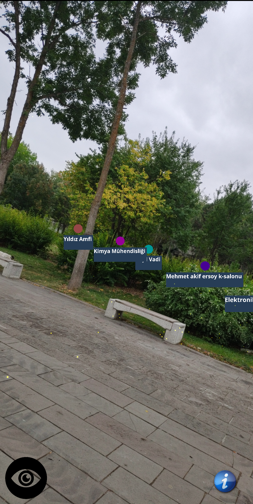
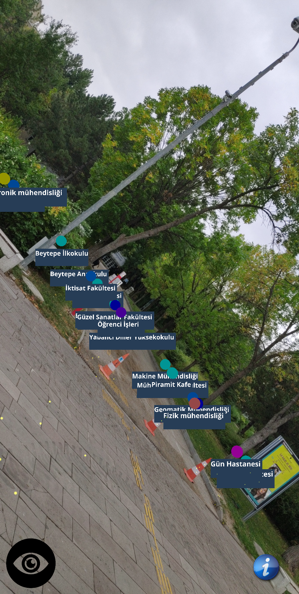
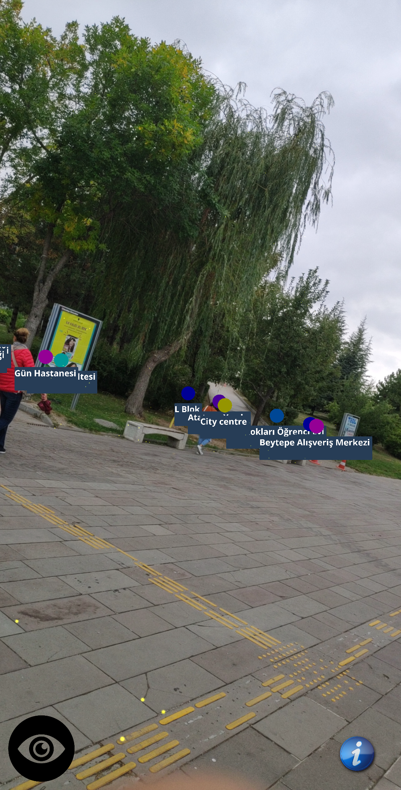
CampusAR Gradient Colors
There are 39 POIs location in this method. Gradient colors were determined according to distance of points.
How far away the POIs are from the user can be understood by looking at their colors.
This method can will be download by
CampusAR Gradient Colors.
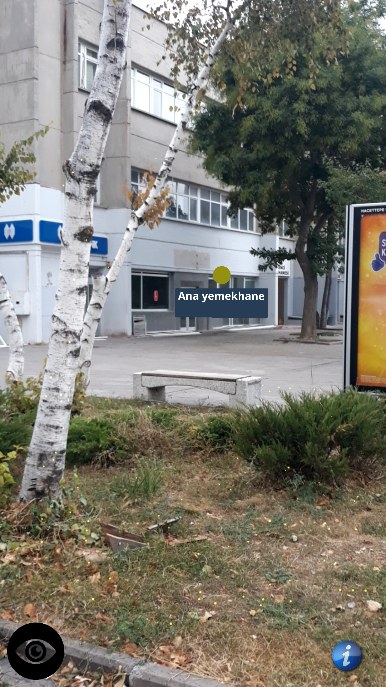
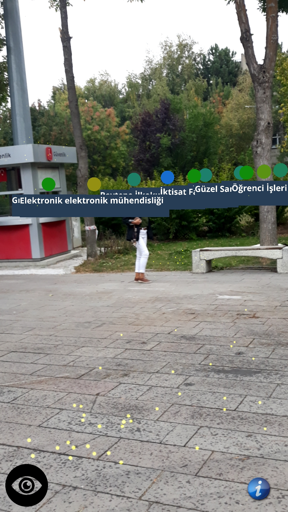
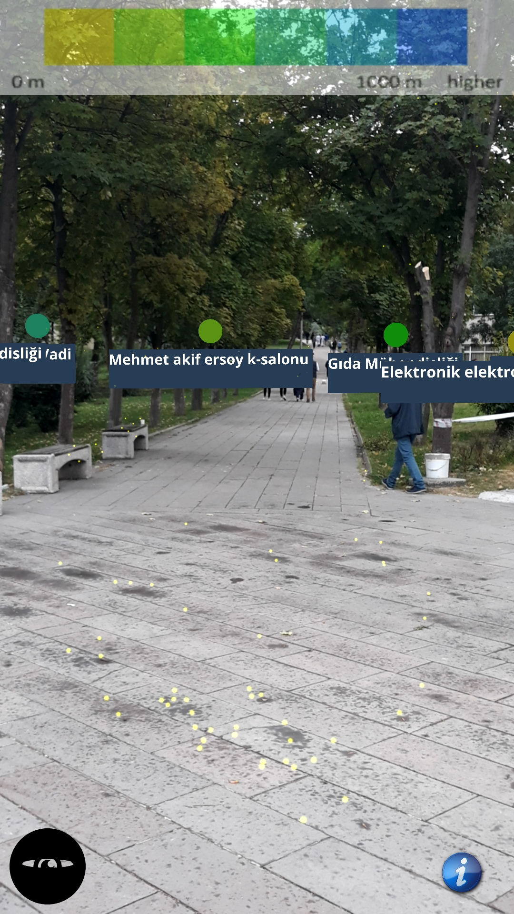
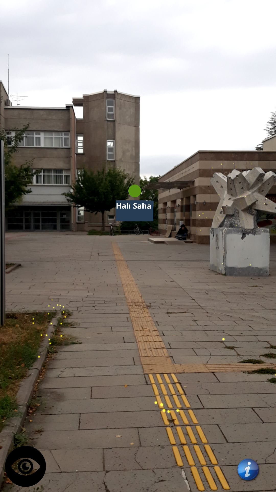
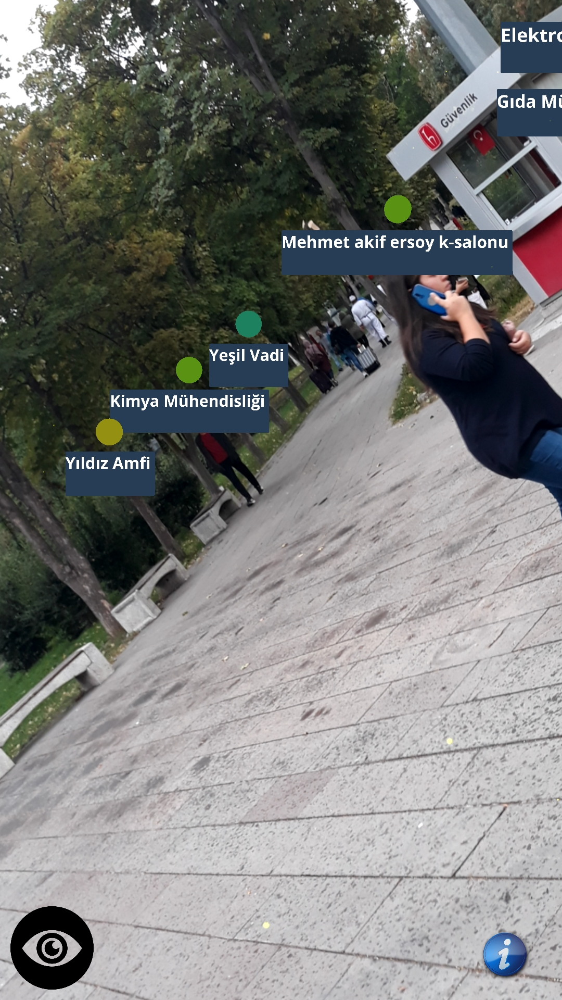
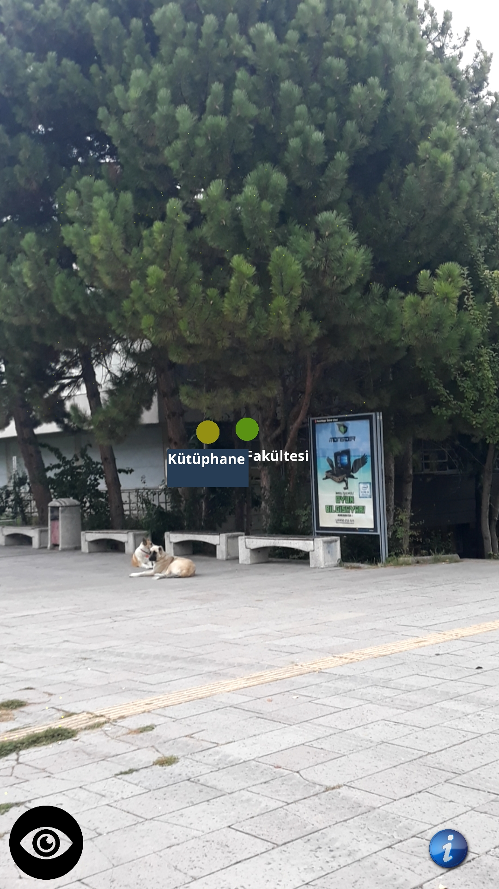
CampusAR Distance
There are 39 POIs location in this method. In this method,
the distances of the POIs to the user is written below the POIs.
This method can be download by
CampusAR Distance.